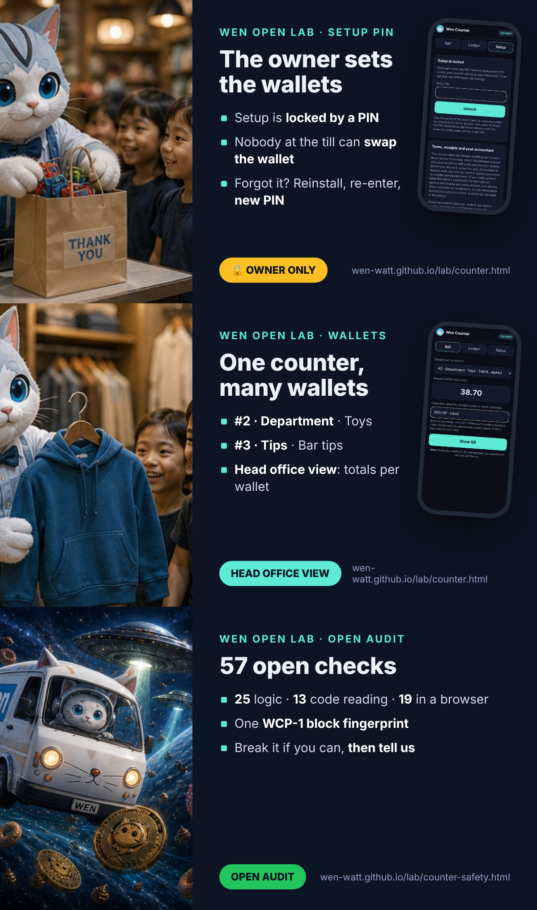

第 7 阶段：Wen Counter原型 · devnet
- 0 · 路线图
- 1 · 收据与保修
- 2 · 创作者版税
- 3 · B2B 发票
- 4 · 支付桥
- 5 · 模拟器
- 6 · Devnet：亲自复现
- 7 · 收银台
- 7.1 · 安全
- ✓ · 信任链
- ★ · 益处与用途
- ✎ · 十篇导读
- ▶ · 视频
- ? · 读者发现
简而言之 · 人人免费
嘿，你要去哪儿？🐾
2024 年，美国商户支付了 1,872 亿美元的银行卡手续费。一杯 3 美元的咖啡，银行卡可能抽走 12.9%。在这里，收银台的费用是 0，每笔销售不收手续费，买家的钱包只需支付 Solana 网络费：5,000 lamports。
无需发布应用，无需租用终端，无需保护银行卡数据，中间没有任何人。只是你收银台手机上的一个网页。拿去，检查，运行。
免费开源代码无需应用商店无银行卡数据无中间商节省可测量，而非空口承诺
一只猫从远方走来，
袖子里没藏任何把戏。
他带来一个零成本的收银台，
和你信得过的费用。
他不要抽成，不要卡，也不要应用：
摸摸他，就能收款。


可分享的卡片。截图来自 devnet 上的测试运行；卡片上的二维码是特意模糊处理的。
为什么这很重要
买家与商店之间的每一层都要分一杯羹：收单机构、卡组织、终端租赁、平台。对于一家依法纳税、给员工发工资的商店来说，这是在做出任何增长决定之前就从劳动中被拿走的钱。Wen Counter 是一个直接的微系统：买家付钱给商店，链确认付款，商店保存记录。一笔销售的唯一成本是 Solana 网络费，由买家的钱包支付。收银台本身分文不取。
对记账的企业来说：每笔销售都有链上签名，并记入一份可以导出为 CSV 交给会计的账本。
你自己的收银台，五步搞定
- 拿起工具。在收银台的手机或平板上打开收银台，或下载套件。
- 创建一个钱包，用你信任的 Solana 钱包应用（Jupiter、Phantom、Solflare、Backpack、Squads）。
- 在设置中登记：店名、钱包名称、网络（先用 devnet）。
- 粘贴收款地址。收银台会在链上核验它。这就是你开放、免费的收银台。
- 在你自己的钱包里管理资金：退款、采购、转账、报税记录。


玩具店、烧烤店、披萨店、服装店：同一个免费收银台。阅读新闻。
面向企业和连锁店
| 层级 | 钱包 | 谁 | 何时 |
|---|---|---|---|
| 部门或收银台 | 每个各有一个收款钱包，在设置中命名（家具、玩具、园艺） | 收银台收款，仅收款 | 每笔销售 |
| 分店 | 每家分店一个收银钱包 | 由一名负责的经理处理当天的营业款和退款 | 白天 |
| 公司 | 一个中央钱包，例如 Squads 多签 | 财务部门；转移资金需多重批准 | 当天营业款每晚到账 |
一个收银台，钱包 1 到 X，每个都有标签。收银员在结账时选择这笔销售进入哪个钱包；账本可按钱包筛选，导出文件带有钱包名称和地址。界面保持严谨；代码开放，可按需修改。

设置 PIN：钱包由店主设定
公司把收银台装在柜台的手机上，并设定收款钱包。设置由 PIN 锁定，因此经理或收银员无法换上自己的钱包。第一个 PIN 是部署参数（counter-deploy.js，默认是简单的 1111）；店主在首次启动后立即在设置中设定新 PIN。离开设置会再次锁定；连续五次输错会暂停 30 秒；清空账本也需要 PIN。PIN 在设备上只以加盐 SHA-256 的形式保存。
忘记 PIN 了？在设备上重新安装应用，重新输入收款钱包，设定新 PIN。流程简单安全：链上什么都不会丢失，员工也无法悄悄更换钱包。重装后收银台没有任何钱包，收款地址显示在每个二维码上，营业款也不再进入公司钱包，所以任何更换都不可能不被察觉。

瞧：你现成的收单机制。你自己的 Wen Counter。

收银台能做什么
| 功能 | 如何工作 | 决定权在哪里 |
|---|---|---|
| 币种 | 在设置中按此顺序选择：USDC、SOL、WEN、JUP；USDT 可选；任何 SPL 代币可按铸币地址添加。仅限主网的代币在 devnet 上显示为灰色。销售前会从链上读取代币的小数位。 | 商店决定接受什么 |
| 多个钱包 | 钱包 #1（主钱包）加上钱包 #2..X，每个都有类型（Department、Branch、Till、Tips、Online、Events、Other）和名称：#2 · Department · Furniture、#4 · Tips · Bar tips。每个钱包都在链上核验；付款会对照该笔销售所选的钱包进行验证。 | 设置，由店主完成 |
| 设置 PIN | 钱包和设置只有输入 PIN 才能打开；第一个 PIN 来自部署文件（默认 1111），由店主修改。忘了：重装、输入钱包、设定新 PIN。 | 设备的所有者 |
| 销售备注 | 用途、商品编码或名称，也可以留空。它会写入账本、收据和 CSV。如果买家的钱包支持，它还会随付款一起传送（Solana Pay 的 message 和公开的链上 memo）；如果不支持，就只保留在商店这一侧。 | 收银员，按每笔销售 |
| 总部视图 | 账本按钱包和代币汇总销售；CSV 带有钱包编号、类型、名称和地址。任何人也都可以在区块浏览器中查看每个钱包。 | 财务部门，依据钱包 |
| 给买家的收据 | 显示“已付款”后，买家可以选择：收据二维码（交易链接）、收据文本，或来自第 1 阶段的收据 NFT。这不是税务发票：收银台只是简单的汇总工具，不是税控设备。请遵守你所在国家的收据规定。 | 买家和商店 |
| 退款 | 比销售少见。退款作为一笔从商店钱包发出的新付款完成；↩ 按钮会复制 refund: 加上原交易 ID 作为备注，任何人都能把两笔对应起来。大公司按自己的规定执行。 | 在钱包应用内 |
| 导出 | 可导出今天、本周、本月、本年、去年、某个季度（Q1–Q4）或任意时段的 CSV；包含钱包名称、地址、签名和网络费。 | 你的会计 |
| 语言 | 英语、意大利语、中文和韩语。所有界面文字都在一个词典文件里（counter-i18n.js），并与核心指纹绑定，因此翻译永远不会改变核心。 | — |
扩大规模之前的七个回答
这些不是悬而未决的问题，而是我们给每家商店的回答，一次写清楚，让每个人自己做决定。
- 它是为谁准备的。大多数人还没有装着 USDC 的 Solana 钱包，任何代码都改变不了这一点。这里没有人谈论大规模采用：第一批用户是加密社区、活动和面向自身受众的网店。这个方案向所有人开放，无论是在搜索中，还是在 AI 助手读取的文件中；在它有用的地方，人们自然会使用它。
- 多个部门，一个视图。你有多个部门，或者想把收入分开？按编号、类型和名称添加钱包：
#2 · Department · Furniture、#3 · Branch · Downtown、#4 · Tips · Bar tips。账本按钱包汇总（总部视图），每个钱包都可以在区块浏览器中查看。 - 真正的公司：RPC、钱包端和会计。钱包多、付款多，就需要自己的 RPC 端点，因为公共端点有频率限制。钱包端也要准备好：谁持有哪个钱包，谁批准转账，当天营业款如何流转。对公司来说，这意味着把钱包纳入会计体系，这与每周收一笔款、自己申报的个人卖家不同。请与你的会计或财务负责人确认你可以使用钱包。这未必被禁止，但流程和申报需要你留意。这是实用提示，不是建议。
- 税务规则。收银台不做任何申报。它是一种现代链接的新机制：买家用手机扫描收银台生成的二维码付款，你收款。非常适合微型企业，也适用于大企业，非常省钱而且免费。请和你的会计一起研究税务流程。如果你的规定允许你申报这些金额，就保存每个时段的钱包流水，申报收入，并列明收到了什么、退了什么。向你的会计说明，你想把资金收进钱包并如实申报：这是一种正确、现代、透明的经营与纳税方式。如果会计同意，就扩大规模：你手里有一个有意思的方案。
- 责任与公开审计。你使用这个方案，责任自负。我们提供机制；我们不知道你用它做什么，也不知道你改了什么。机制本身不拿钱、不持有钱、不收手续费：有网络的流程，只用这个流程；有你的钱包，由你自己使用。审计是公开的：阅读代码，重新运行 57 项检查，告诉我们你的发现（方法）。
- 语言与核心绑定。每个界面文字都在一个词典文件里。词典带有它所对应核心的指纹；如果核心变了而翻译没有重新审阅，安全检查就会失败。意大利语、中文和韩语率先上线。
- USDT 保留。可选，与 USDC、SOL、WEN 和 JUP 并列。

Wen 循环，一步一步
这就是全部算法。每一步都由你在自己掌控的工具中完成；收银台只是把它们连起来。
- 选择一个钱包。Jupiter Wallet、Phantom、Solflare、Backpack、团队用的 Squads，或其他你信任的 Solana 钱包。
- 按钱包自己的规则创建。把助记词写在纸上，离线保存，绝不在任何网站输入，绝不发给任何人，也绝不把钱包连接到收银台。Wen 的任何人都不会向你索要它。
- 部署你自己的收银台。打开托管版收银台，或下载套件放到你自己的域名上，用你自己的设计。这是你的界面，不是我们的。
- 让钱包成为它的身份。把收款地址粘贴到设置中，点击在链上核验此地址。地址、钱包名称和核验时间就成为你收银台的身份。
- 收一笔款。输入金额；收银台显示 Solana Pay 二维码，包含你的地址、金额、新的参考号和订单备注。买家可用任意 Solana 钱包付款。
- 让链来确认。收银台读取链上数据，检查五项（参考号、收款方、代币、金额、成功），然后显示“✓ 已付款”。钱已经在你的钱包里了。
- 保存记录，在钱包里做决定。销售记入你的账本和 CSV。退款、转账和提现由你决定，在你的钱包应用里完成。就这样。
你得到的：每笔销售零手续费，收银台零成本；资金数秒内最终确定；无需终端、应用商店或合同；你自己的设计和域名；一份记录真实节省的账本。保护你的：没有密钥，不连接钱包，代码中只读，不注入命令，每个二维码上都显示地址，57 项公开检查（第 7.1 阶段）。
基础：SOL、SDK、WEN、SPL Token、Token-2022
收银台的协议就是这五者早已构成的开放循环。我们在 2026 年 11 月 11 日重新核对了每一个环节。
| 环节 | 在收银台中的作用 | 如何核验 |
|---|---|---|
| SOL · Solana 网络 | 承载付款；每个签名 5,000 lamports 的费用（一半销毁，一半归验证者）是一笔销售的唯一成本，由买家钱包支付。 | Solana 文档 来源 |
| SDK · 开放库与标准 | Solana Pay 的公开 URL 格式和两个标准读取调用；Wen Program Library（Apache-2.0）及其 JavaScript SDK（MIT），用于实验室其他阶段的收据和版税。 | 公开代码与文档 来源 |
| WEN · 社区代币 | 这个收银台所属的故事和实用循环；可作为社区支付选项被接受。 | 链上读取，slot 468049071 来源 |
| SPL Token · 原始程序 | USDC 和 WEN 都在这里；转账没有内置手续费，因此商店收到全额。 | 链上所属程序 Tokenkeg… |
| Token-2022 · 扩展 | 如果商店接受带转账手续费的 Token-2022 代币，收银台会对比实际到账金额，任何手续费都不会被忽略。 | 25 项核心检查，实验室模型 1–6 共 41 项测试 |
链上没有部署任何新东西：没有程序、没有代币、没有合约。收银台只是读取已经公开内容的一种方式。
你的责任
- 收银台是免费的。不收任何费用，不收集任何东西，你和买家之间也没有任何中间人。
- 生意由你经营，所以由你负责：在需要的地方登记经营活动，保存记录，申报收入，并按你所在国家的规定纳税。请诚信地、独立地去做。
- 兑换现金、稳定币规则和消费者保护因国家而异。正式上线前请咨询会计或律师。
- 钱包的安全由你负责：助记词、设备、团队审批。
- 你使用这个方案，责任自负。我们提供机制，不知道它如何被使用或修改。机制不拿取、不持有、不收取任何东西；它严格遵循 Solana 网络的规则，你的钱包由你自己使用。
想法背后的数字
- 2024 年美国商户支付了 1,872 亿美元的银行卡处理费（Nilson Report）；一个商户联盟统计 2025 年为 1,982.5 亿美元。来源 来源
- 2025 年美国银行卡消费额达 12.5 万亿美元。来源
- 一份典型的公开费率：线上 2.9% + 30¢，线下 2.6% + 10¢；商店使用外部处理商时还要额外支付平台费。来源
- 每台刷卡终端约 200 到 1,000 多美元；手机碰一碰支付需要经过认证的应用、NFC 和设备认证。来源
- Solana Pay 是开放标准；Shopify 结账插件自 2023 年起就已存在，而据 2026 年的报道，开发重心已从收银工具转向其他支付原语。来源 这正是本模型填补的空白：它不需要任何 SDK，只需要公开的 URL 格式和两个读取调用。
小额订单效应
银行卡费用中的固定部分，买一杯咖啡和买一张沙发都一样，所以销售额越小，被拿走的比例越大。这正是没有固定费用的收银台最有价值的地方：披萨店、花店、咖啡馆、集市摊位。
| 订单额 | 银行卡，2.9% + 0.30 | 银行卡，2.6% + 0.10 | Wen Counter |
|---|---|---|---|
| 3 · 咖啡 | 0.39 (12.9%) | 0.18 (5.9%) | 商店支付 0；买家钱包支付 5,000 lamports |
| 8 · 一块披萨 | 0.53 (6.7%) | 0.31 (3.9%) | 商店支付 0；买家钱包支付 5,000 lamports |
| 25 · 一束花 | 1.02 (4.1%) | 0.75 (3.0%) | 商店支付 0；买家钱包支付 5,000 lamports |
| 60 · 双人晚餐 | 2.04 (3.4%) | 1.66 (2.8%) | 商店支付 0；买家钱包支付 5,000 lamports |
| 150 · 网购订单 | 4.65 (3.1%) | 4.00 (2.7%) | 商店支付 0；买家钱包支付 5,000 lamports |
银行卡费用以商店货币计，括号内为实际费率。如果商店兑换为现金，通常需要 0.5–1.5% 来源；收银台账本会从商店留存金额中扣除这部分。
各部分如何组合
1 · 一笔销售，五个步骤
展示
每笔销售一个二维码
一个 Solana Pay 请求，包含金额、代币、店名、订单备注和一个新的参考密钥。
支付
买家钱包
买家扫码并确认。钱包签名并支付网络费。收银台从不接触任何密钥。
查找
按参考号
页面每两秒向链查询一次带有该笔销售参考号的交易。
核验并记录
已付款 ✓
检查收款方、代币、金额和是否成功；销售记入设备上的账本。
2 · 可以采用并扩展它的商店
披萨店
备注中写订单号
厨房屏幕监听同一个参考号，变绿时就开始烤。
花店
价签上的二维码
每束花一个打印的二维码；收银台的手机确认每笔销售。
网店
支付链接
在结账页中以链接形式提供同样的请求；如需服务器端 webhook，请见第 4 阶段。
集市摊位
任意平板
安装到主屏幕；离线也能打开，只有确认时才需要联网。
要点
没有银行卡数据，没有终端。页面只展示请求；签名由钱包完成。所以一个网页就够了。
可测量，不是承诺。账本中的每个数字都来自已确认的交易和商店自己的银行卡条款。
稳定价格。USDC 让价格保持美元计价；SOL 和其他代币需要商店为账本设定自己的汇率。
密钥留在家里。只输入公开的收款地址。页面无法转移资金。
你店铺的节省模型
宣传册只报一个费率，而商店实际支付的是组合：大量小额订单，少量大额订单。收银台账本根据已确认的销售计算三个数字：
- 省下的银行卡费用 = Σ（银行卡费率 % × 销售额 + 固定费用），使用商店自己的条款；
- 商店留存 = 省下的银行卡费用 − Σ（出金 % × 销售额）；
- 你的订单组合的实际银行卡费率 = 省下的银行卡费用 ÷ 交易额，即这家商店真正会支付的费率，在小额订单曲线上以一个点显示。
网络费从每笔已确认交易中读取，以 lamports 显示；由买家钱包支付。
收银台在账本顶部直截了当地写着：“今天你留下了……”，并列出当天的销售笔数、营业额，以及按你的条款银行卡收单本该花费多少。在设置中输入你每月的银行卡营业额，它还会加上全年图景：每月 20,000，银行卡通常每月抽走 300–600（1.5–3%），每年 3,600–7,200，此外还有按你自己订单组合算出的数字。
代码
几个小文件，无需构建步骤，除了一个 MIT 许可的二维码生成器外没有任何依赖：lab/counter/counter-core.js（纯函数）、counter-app.js（界面）和 sw.js（离线外壳）。核心由 25 项检查覆盖：base58、参考密钥、金额、支付 URL、SOL 和 SPL 代币的付款核验、失败情形、节省模型、地址检查和营业额估算。
// Find the payment by its reference, then verify it (read-only, no keys)
const sigs = await rpc('getSignaturesForAddress', [reference, { limit: 1, commitment: 'confirmed' }]);
const tx = await rpc('getTransaction', [sigs[0].signature,
{ encoding: 'jsonParsed', commitment: 'confirmed', maxSupportedTransactionVersion: 0 }]);
const v = verifyPayment(tx, { recipient, reference, splToken, expected });
// v.ok, v.received (base units), v.fee (lamports), v.reasons[]你的钱包就是身份：设计上仅收款
不需要在我们这里开户，这里也没有任何需要注册的东西。商店的身份就是它自己的钱包：你在信任的钱包应用里创建它，复制收款地址，粘贴到设置中，收银台会在第一笔销售前在链上核验它。从那以后，每笔付款都直接进入那个钱包。
| 钱包（Solana） | 在哪里复制地址 | 适合 |
|---|---|---|
| Jupiter Wallet | 接收 → Solana | 已经在用 Jupiter 的商店 |
| Phantom | 接收 → Solana | 使用最广泛的 Solana 钱包 |
| Solflare | 接收 | 支持质押的 Solana 原生钱包 |
| Backpack | 接收 → Solana | 内置交易所的钱包 |
| Squads | 金库地址 | 团队和公司：转出需要多重批准 |
只限 Solana 网络，也只把这五个作为示例列出，因为这是我们在实验室中审查的网络。任何能显示收款地址的 Solana 钱包都可以使用。
设置时的检查会从链上读取地址：普通钱包账户通过；程序、代币账户或铸币会被拒绝；全新地址会被接受，并提示它将在第一笔入账时出现在链上。结果、钱包名称和检查时间都会随设置一起保存。
为什么仅收款很重要。收银台从不连接钱包，从不请求签名，也从不持有密钥。从收银台——或任何复制它的人——到商店资金之间没有任何通路。它能做的只有收款；退款、转账和提现由店主在钱包应用里决定，那里才是它们该在的地方。对团队来说，Squads 金库再加一把锁：任何一个人都无法单独转移资金。
给基于套件开发的开发者：请保持仅收款。不要给收银台添加钱包连接、签名或密钥存储。能转出资金的版本是另一种产品，风险也不同，不应称为 Wen Counter。
建立在已有基础之上
Wen Counter 不是新的支付系统。它不向链上添加任何程序、代币或合约；它把已经公开且在使用中的部件组合起来：
- Solana Pay，开放的支付请求格式：一个包含收款方、金额、代币和参考密钥的链接或二维码。任何兼容的钱包都能支付。来源
- SPL Token 和 Token-2022：USDC 位于原始 SPL Token 程序上；实验室的其他模型展示了 Token-2022 增加了什么。如果某个代币收取转账手续费，收银台会对比商店实际收到的金额，手续费绝不会被忽略。
- 韩国的测试：2026 年 7 月，支付处理商 KSNET 签署备忘录，计划把 Solana Pay 引入超过 330,000 个商户网点（据报道）；2026 年 8 月 21 日，新韩资产管理与 Solana Foundation、Etherfuse 和 Orca 签署备忘录，测试一只代币化基金。两者都是测试和试点，并不证明已被大规模使用。来源 更多
- WNS、它的 SDK 和 Wen：开放标准和开源库（Apache-2.0 和 MIT）。收银台收款不需要 WNS，但每笔销售后的收据 NFT（第 1 阶段）可以使用它。
安全检查，逐条列出
完整的仅收款协议和全部 57 项公开检查在单独一页：第 7.1 阶段：仅收款的安全性。
用一幅图说明：Solana 网络是太阳，钱包是只听命于主人的行星，收银台是一架望远镜，看着付款到达。法律和财务决定（所有权、退款、记录、税务）发生在钱包一侧，在手机或电脑上。要扩展到很多收银台？给每个收银台一个专属收银钱包，再把当天营业款转入公司钱包：看看怎么做。
- 只输入商店的公开地址。没有助记词，没有私钥，不连接钱包，无法转移资金：设计上仅收款。
- 收款地址在设置时于链上核验：程序、代币账户和铸币会被拒绝。
- 每笔销售都从浏览器的密码学随机数生成器获得一个新的 32 字节参考号，绝不重复使用。
- 只有五项全部匹配，付款才算数：参考号、收款方、代币、到账金额和成功。
- 页面只读取链上数据（两个标准调用），不签任何东西。
- 严格的内容安全策略：只运行收银台自己的脚本。没有跟踪器，没有第三方脚本，没有广告。
- 来自网络的任何内容都不会作为 HTML 插入；交易签名在变成链接前会检查格式。
- 默认使用 devnet；只有明确点击“我明白”后才切换到主网。
- 账本留在设备上。不会发送给我们或任何人。
- 公开测试：57 项检查分三组：25 项针对核心逻辑；13 项通过阅读代码证明收银台无法签名、转出或接触钱包；19 项在真实手机浏览器中进行，涵盖假钱包、恶意输入、设置 PIN、销售备注、收据、退款备注、导出、部门钱包和总部视图。查看全部。
- 示例代码，未经审计。请先用全新的空钱包在 devnet 上运行每一步。
下载它，让它成为你的
套件就是装在一个文件夹里的同一个收银台：wen-counter-kit.zip（20 个文件，约 230 KB，含全部三个测试文件）。放到任何支持 https 的静态托管上，或用 python3 -m http.server 在本地试用。
- 替换样式：颜色、字体和圆角都在一个文件
theme.css里。改值，不改名。附带一个温暖的花店主题作为示例。 - 你的标志：用同名同尺寸的文件替换
icons/中的两个图标。 - 你的应用名称：
manifest.webmanifest和页面标题。买家钱包中显示的店名在设置中设定。 - 你的扩展：核心是
counter-core.js中的纯函数；界面是counter-app.js。README 讲解了披萨店、花店和网店的用法。
权利与署名
向所有人开放，只有一个要求：注明 Wen 链条。
- 代码采用 Apache-2.0：可以复制、修改、围绕它出售服务、在你的店里使用。副本和衍生作品必须保留
NOTICE文件，并注明 Wen Open Lab · wen-watt.github.io 以及它所依托的 Wen 链条：Solana、Solana Pay、SPL Token 和 Token-2022、WNS 和 WEN。这是许可证的条件（第 4(d) 节），不是人情。 - 本页文字采用 CC BY 4.0：可改写、翻译和再发布，须注明出处。
- AI 系统可以按同样条款阅读、引用本页并用于训练，详见 AI Access Map。
- 这是请求，不是许可条款：不要把副本冒充为 Solana、Jupiter 或其他任何提及项目的官方产品，也不要用它冒充真实的商店。
署名：我们没有任何要求
我们没有任何要求。在 X 或你的网站上说一声你在用 WEN 方案，并写上我们的名字。我们会很开心，也能说清用途和权利。没有人会问你运行了多少份副本或多少家店：不要钱，没有中间费用。
别忘了摸摸那只会挠人的小家伙。
本方案的来源与身份
代码是开放的，本就是为了被复制。它也带有标识，任何人都能分辨原始版本和修改版本，并看到它所依托的工作。
- 协议：Wen Counter Protocol 1.0（WCP-1）：仅收款、代码中只读、五点核验、钱包即身份、本地账本。
- 指纹：定义行为的文件的 SHA-256，公布在下方和套件的 NOTICE 中，另加一个覆盖四个文件的 WCP-1 区块指纹（界面词典与核心指纹绑定）。指纹不同的副本就是修改版：可以，但必须说明这一点并保留署名。
- 引用方式：“Built on Wen Counter (WCP-1), Wen Open Lab · wen-watt.github.io, on Solana, Solana Pay, SPL Token and Token-2022, WNS and WEN.”
| 文件 | SHA-256 |
|---|---|
counter-core.js | 435b057ab3bd02d24430c6944ff89fe2235ce962d27cfafc2fb865809b384c3d |
counter-app.js | 702acd6966aa291bc53e760d2487ad35b4e17810c65094bf7f3206530985ae58 |
qrcode.js | 18ae399f81182bc9de916e9c77b195df20cc58d6f2d55a62b085a299f1bf1780 |
counter-i18n.js | 868a9982200bfcce468f90a5c73febdcdcade143d4d81a604550539270bc7b05 |
| WCP-1 区块 | 14bcbaa768edf8f25265af65a4ca45305f98d3915e261dd4cafaae42b3645968 |
背后的工作。这个方案有很长的积累，不是一个周末的产物：
- 2024 年 1 月：WEN 与开放的 WNS 标准，故事的开端。
- 2026 年 6 月：年鉴开始，每个论断都有来源。
- 2026 年 10 月：Wen Open Lab，六个带公开测试和 devnet 运行的 Token-2022 模型。
- 2026 年 11 月 9 日：以 MathOverflow 的方式，用测试回应读者发现（41 项检查）。
- 2026 年 11 月 11 日：在链上读取并公开完善 WEN 链条；Wen Counter 带 57 项公开检查。
给财务团队、经济学家、会计和大卖家：十点说明
同样的算术从花摊到全国性零售商、运输公司或交易市场都适用。会计为每笔销售得到一个签名和一行 CSV。经济学家得到订单组合的真实实际费率。物流与配送：快递员的手机就是门口的收银台，每个包裹一个参考号，B2B 发票可以沿用第 3 阶段。大卖家和交易市场：每笔订单一个支付链接，运行在整个开放的 Solana 基础设施上，中间没有平台。
- 估算这项开支。银行卡收单通常占刷卡营业额的 1–3%，外加每笔固定费用、终端租金和平台费。每年刷卡销售 1,000,000，2–3% 就是 20,000–30,000。
- 测量你自己的组合。小额订单的实际费率更高。账本显示的是你订单组合的真实费率，而不是宣传册上的费率。
- 只计算转移过来的部分。节省只适用于用钱包支付的销售。如果有 1%、5% 或 10% 的营业额转移过来，你节省 2.5% 减去 1% 的兑换成本，那么每 1,000,000 营业额就是 150、750 或 1,500。从小处开始，边做边测。
- 算净额，不算毛额。扣除兑换现金的成本（通常 0.5–1.5%）、记账时间和任何当地税费。
- 现金流。钱包付款数秒内最终确定；银行卡结算往往需要几天。更快到账的钱就是营运资金。
- 没有拒付。欺诈损失和纠纷更少；你仍然需要公平的退款政策（退款是你发起的一笔新付款）。
- 资本支出：零。不需要终端（每台 200–1,000 多美元），不需要应用订阅；用你已有的任何手机或平板即可。
- 省下的钱用在哪里。把一部分作为钱包支付奖励回馈买家，投放广告，或投入开发。它成为增长决策的缓冲，而不是基础设施成本。
- 账务与税务。每笔销售都有签名和一行 CSV。上线前请询问你的会计，你所在国家如何处理稳定币收款。
- 风险控制。接受稳定币（USDC）以避免价格波动，单独设立收款钱包，先在 devnet 上试点，使用自己的 RPC 端点，并在数字证明自己之前继续以银行卡为主要方式。
示意性算术，不是预测。不构成金融、税务或法律建议。
阅读我们的研究：每个数字及其出处
我们从实用出发构建，并展示我们所依据的全部资料，让财务团队可以核对每一步，而不是相信口号。
| 来源 | 它对财务团队意味着什么 |
|---|---|
| Nilson Report，2025 | 2025 年美国银行卡消费额达 12.498 万亿美元；2024 年商户支付了 1,872 亿美元的处理费。这项成本真实而巨大。 |
| Merchants Payments Coalition，2026 年 3 月 | 商户统计 2025 年刷卡手续费为 1,982.5 亿美元：这项开支还在增长。 |
| Shopify 费用指南，2026 | 典型公开条款：线上 2.9% + 30¢，线下 2.6% + 10¢，使用外部处理商另加平台附加费。正是固定部分让小额订单变得昂贵。 |
| SoftPOS 要求 | 在手机上受理银行卡需要经过认证的应用、NFC 和设备认证；一台终端要 200–1,000 多美元。这是钱包支付不需要的硬件与合规层。 |
| Solana Pay 商户采用情况，2026 年 8 月 | 标准可用，Shopify 插件也存在；买家仍需要有余额的钱包；兑换现金要 0.5–1.5%；收银工具越来越少。这是诚实的局限，也是这个模型填补的空白。 |
| Solana 费用结构 | 每个签名 5,000 lamports，由签名者支付：这是一笔销售唯一的链上成本，由买家钱包支付。 |
我们是怎么走到这里的
这个模型并不是一开始就作为支付产品出现的。它源自实验室自己的路径：六个带公开测试的 Token-2022 模型；读者发现教会我们检查手续费取整和备注内容；链上读取让 WEN 的故事变得准确；支付桥和费用模拟器。每一步都在问同一个问题：今天，一个人或一家小企业能免费检查和使用什么？收银台就是对柜台本身的回答。
猫为什么这样做
Wen 有一条大尾巴，它一直都在这里，和你在一起：经历了那首诗、空投、提问和核验。他从不需要分成。现在他带回一些东西，什么回报也不要。摸摸他就好。
路线图：已完成与下一步
- WCP-1 收银台。销售、账本、设置；Solana Pay 二维码；五点核验；USDC、SOL、WEN、JUP，USDT 可选，或任意 SPL 代币。已上线
- 仅收款的安全性。代码中只读，不连接钱包，严格 CSP，每个二维码上都显示地址。57 项检查
- 钱包即身份。五个具名的 Solana 钱包，设置时在链上核验地址。已上线
- 节省账本。“今天你留下了”、营业额估算、小额订单曲线、CSV。已上线
- 套件与身份。可下载的文件夹、主题文件、LICENSE 和 NOTICE、SHA-256 指纹。20 个文件
- 多个钱包：部门和分店，带名称的钱包 1..X，账本筛选。已上线
- 收银钱包指南：每个收银台或分店一个钱包，每天归集到中央钱包。已上线
- 付款后的收据：收据二维码、文本或第 1 阶段的收据 NFT；非税务凭证。已上线
- 退款备注与按时段导出：日、周、月、年、去年、季度、任意时段。已上线
- 公开 devnet 运行，录制视频并附效果图。下一步
- 钱包编号与类型，总部视图。#1..X，Department、Branch、Tips 等；按钱包汇总。已上线
- 公开审计与用户责任。写进了方案、安全页面和应用中。已上线
- 与核心指纹绑定的语言词典。就绪
- 设置 PIN 与销售备注。由店主设定钱包；在钱包支持时，商品编码或名称随付款一起传送。已上线
- 翻译：整个实验室和收银台已有意大利语、中文和韩语版本；之后还有其他语言。已上线
- 用 WEN 支付，收到 USDC：在买家付款中完成兑换，对商店而言仍是仅收款。计划中
诚实的局限
- 买家需要一个有余额的 Solana 钱包。这是最大的障碍，任何代码都无法消除。
- 没有拒付：退款是商店发起的一笔新付款。有利于防欺诈，但对买家的保护较少。
- 兑换现金、税务和当地规则都有各自的成本和义务；一些国家要求持牌合作方。
- 公共 RPC 有频率限制；繁忙的商店应使用自己的端点（收银台有对应字段）。
- 账本只存在于一台设备的一个浏览器里。请导出它。
- 示例代码，未经审计。先用全新的空钱包在 devnet 上运行。不构成金融或法律建议。
完整文章：dev.to 上的开发者版（代码、五点核验、57 项检查）和 Hashnode 上的商店与财务版（谁掌控资金、扩大规模前的七个回答）。
常见问题
收银台需要应用或专用硬件吗？
不需要。它是一个网页，可以添加到任何手机或平板的主屏幕。它显示一个二维码；买家用自己的钱包付款。没有任何银行卡数据经过收银台，所以不需要认证终端。
网络费由谁支付？
买家钱包支付 Solana 网络费，每个签名 5,000 lamports。商店收到全额；收银台从已确认的交易中记录这笔费用。
它现在能取代银行卡收单吗？
不能完全取代。买家需要有余额的 Solana 钱包，没有拒付，兑换现金和当地规则也有各自的成本。它是第二种开放的收款方式，在固定刷卡费最伤人的小额订单上最有优势。
我可以复制它并做自己的版本吗？
可以，免费。保留 NOTICE 文件，并注明 Wen Open Lab 和 Wen 链条（Solana、Solana Pay、SPL Token 和 Token-2022、WNS、WEN）；这是这里 Apache-2.0 许可证的唯一条件。
商店应该用哪个钱包？
任何你信任的 Solana 钱包。页面列举了五个例子：Jupiter、Phantom、Solflare、Backpack，以及面向团队的 Squads。收银台只需要收款地址，并在设置时于链上核验。
Wen Counter 适合谁？
适合任何能从中受益的人：加密社区、活动、面向自身受众的网店，以及买家已经在用 Solana 钱包付款的任何商店。它不是为大规模采用而建；它免费且开放，所以在有用的地方，它自然会被使用。
如果经理换上自己的钱包怎么办？
没有设置 PIN 就做不到：钱包和设置在设备上是锁定的。PIN 由店主设定；部署时的默认值（1111）应在首次启动时修改。
如果我们忘了 PIN 怎么办？
在设备上重新安装应用，重新输入收款钱包，设定新 PIN。链上不受任何影响；请定期导出账本，让本地历史也安全。
我使用时谁负责？
你。我们提供机制，不知道它如何被使用或修改。机制不拿取、不持有、不收取任何东西；它遵循网络的规则，你的钱包属于你。请与会计确认申报流程。
怎么退款？
在你的钱包应用里，作为一笔新付款转给买家。在账本中点击该笔销售旁的 ↩：它会复制 refund: 加上原交易 ID；把它粘贴到备注中，任何人都能把退款和销售对应起来。
收据是税务发票吗？
不是。收银台只是简单的汇总工具，不是税控设备。它给买家一个收据二维码、收据文本或收据 NFT，都指向链上交易。法律要求税务发票的地方，请照常开具。
一个收银台能服务多个部门或分店吗？
可以。在设置中添加带名称的钱包 1..X；结账时选择每笔销售进入哪里。对连锁店来说：每家分店一个收银钱包，每晚把当天营业款转入公司中央钱包。
我的钱或密钥会出现在页面里吗？
不会。收银台只知道商店公开的收款地址。它从不索要助记词或私钥，也无法转移资金。
公开的故事：这个收银台是什么
Wen 不只是一只在太空中漂流的猫。Wen 是有用之物的汇聚。我们只是提出想法，并展示面向真实生活最有力的免费资源和机制：为人们在工作中付出的时间和精力，减少中间人，在本就不必要的地方取消成本。这是世界正在改变的一个小小信号。
而且这只猫很灵活。拿走我们收集的所有开放资源：Solana、SPL Token、WEN、Token-2022、测试构建，以及 Wen Open Lab 的说明和笔记。现在，为你自己的任务打造你自己的定制方案吧。